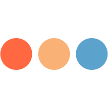

Sobre Mim

Isaac L. F. Pontes
I'm a web developer who loves to code, solve problems and help people. I also like music, videogames and cats :)
 São Fidélis, RJ
São Fidélis, RJ
Minhas Ferramentas
Front-End
Back-End
Outras
Background
Sou formado em Sistemas de Informação pelo Instituto Federal Fluminense há 4 anos e tenho atuado desde então como desenvolvedor web freelancer. Minhas experiências até o momento envolvem, principalmente, HTML5, CSS3, Sass, frameworks como Bootstrap e Bulma, Javascript, PHP, Laravel e WordPress. Além disso, tenho explorado mais de perto o ecossistema do Javascript e estudado tecnologias como Node.js, Express, React, Next.js e MongoDB.
Experiência

Desenvolvedor Freelancer
Período: 2018 - Agora
Eu crio sites e aplicações web full-stack usando principalmente PHP, Node.js e React. Em meus projetos, eu passo por todas as etapas, desde o planejamento, design e prototipagem, até o desenvolvimento, teste e implantação em ambiente de produção.
Técnico em Informática na Prefeitura Municipal de São Fidélis
Período: 2016 - Agora
Atuo com instalação e configuração de clientes e servidores Windows e Linux, gerenciamento de redes de computadores, suporte Service Desk e desenvolvimento e manutenção de sites e aplicações web. Algumas das ferramentas com que trabalho são servidores web Nginx e IIS, Microsoft Office, PHP e WordPress.
Formação
Bacharel em Sistemas de Informação pelo Instituto Federal Fluminense
Ano de Conclusão: 2017
Durante o curso tive a oportunidade de me familiarizar com diversos tópicos, tanto na área de desenvolvimento de software, como estruturas de dados, programação orientada a objetos, etc., quanto em áreas afins, como matemática e administração. Apesar de passar rapidamente por alguns tópicos mais avançados como inteligência artificial e internet das coisas, ao terminar o curso optei por me aprofundar no desenvolvimento de aplicações web.
Técnico em Informática pelo Instituto Federal Fluminense
Ano de Conclusão: 2012
Já conhecia a área de tecnologia da informação desde jovem, mas essa foi minha primeira experiência acadêmica significativa. Apesar de ter como foco principal a área de infraestrutura, o curso abordou também um pouco sobre algoritmos e linguagens de programação, o que me chamou a atenção e posteriormente me conduziu à graduação em sistemas de informação